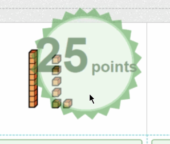
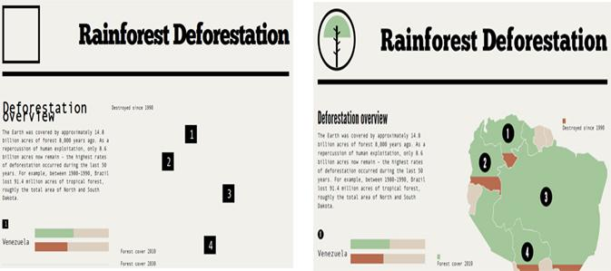

Picture This
Automated Visual Regression Testing
but first, What is Jeff Koenig?
QA
Manager
Automator
Dev
Ops
DevOps
I <3 Gifs

What is Visual Regression Testing?
VRT verifies how a page L👀ks
Example
|  | |
|
Good |
Bad |
Why do we need VRT?
Why do we need VRT?
Browsers are unreliable and inconsistent
Why do we need VRT?
Too many environments to test manually
BrowserStack Supports 987 enviornments
Why do we need VRT?
Because it is annoying to manually test the same thing acrossing a bunch of different browsers
Example
Are any of you doing Visual Regression Testing already?
Why aren't we all doing it?
So many bad tools

Well..
not bad,
just meant for other things
Tools that came before
VisualReview
Server based tool, and requires manual review for approving/rejecting diffs
Spectre
Server based as well, this one allows for a bit more integration and will pass/fail each image, for manual review

Wraith
Using a headless browser, takes and compares screenshots across domains, or between a domain and a history of screenshots.
Selenium Wraith
Wraith, but with selenium support, but compares all browsers to the same baseline image
Resemble.js
Generates really nice image differences
PhantomCSS
uses headless browsers, focuses on CSS Regression Testing
The Problems with these tools
- Requires more infrastructure
- Requires a completly seperate test framework
- Really only work well for static sites
- Must use real browsers to be affective
- No clear test result(Pass/Fail)
- This makes it difficult for using with CI
The Tools
Compatriot
Example
describe 'a page' do
it 'has not changed visually' do
visit url
assert_no_ui_changes
end
end
For multiple assertions per test
describe 'a page' do
it 'has not changed visually' do
visit url
assert_no_ui_changes 'part 1'
click_on link
assert_no_ui_changes 'part 2'
end
end
Looks like your Unit and Integration tests, but they should be kept and run separately
The Process
Control Images
Lets Talk Image Diffing
How do we do it?
It's sooo simple!!!


Example
def self.color_difference_of_pixels(pixel1, pixel2)
score = Math.sqrt(
(r(pixel2) - r(pixel1)) ** 2 +
(g(pixel2) - g(pixel1)) ** 2 +
(b(pixel2) - b(pixel1)) ** 2
) / Math.sqrt(MAX ** 2 * 3)
[grayscale(MAX - (score * MAX).round), score]
end
Example

|

|

|
|
Control |
Variable |
Diff |
Assert Diff < Threshold
default threshold is 0.05%
What I've learned on my adventure
Tests are slow
- but can be parallelized!
Retries
Reduces noise from page rendering speeds
Variable Data Generation
When shown on the page
ie. Names, Usernames
What still needs some polish?
Browser Driver are still very inconsistent
- Full Page Screenshots
- Inconsistency with driver support
Better Diffing, Like ResembleJS
|
|
|

|
|
Control |
Variable |
Diff |
THE END
LINKS!!!
- Twitter: @JeffKoenig
- Github: TheJefe
- These Slides: TheJefe.github.io/picture_this/
- Compatriot
- BrowserStack
- Selnium